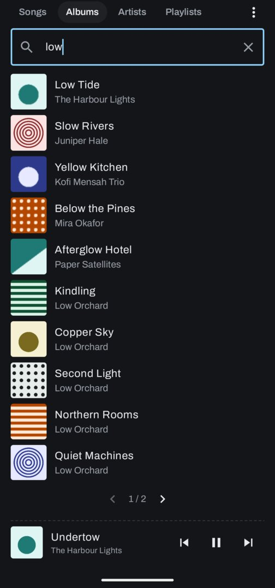
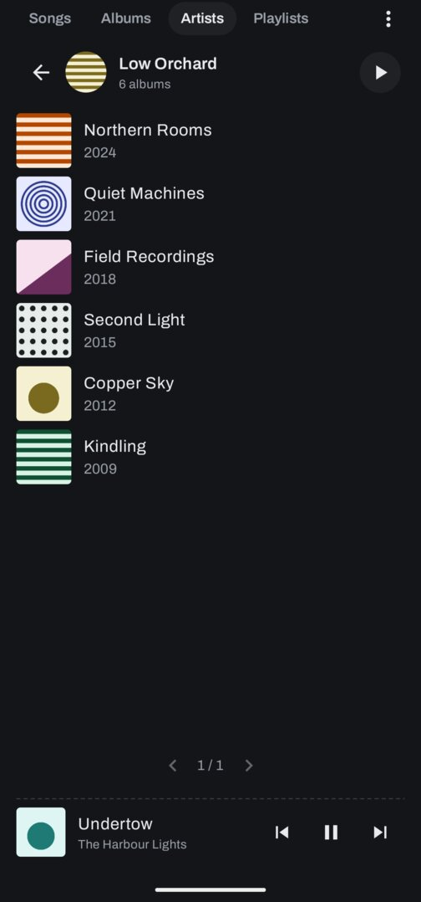

Just your Spotify library on Android, without the clutter.
Search it, tap, play. No feed, podcasts or recommendations.


Shown with a made-up demo library.
What is it?
A tiny Android app for people who just want to listen to music. It shows the albums, songs, artists and playlists you’ve already saved, with album art and simple playback controls.
Has
- Your library
- Search
- Album art
- Play, pause, skip
Doesn’t have
- Home feed
- Podcasts
- Recommendations
- Endless scrolling
You need Spotify Premium and the Spotify app installed. CD Wallet controls it in the background, so you never have to open it.
Install on Android
CD Wallet isn’t on the Play Store. You build it once on your computer and it stays on your phone like any other app.
- Install Android Studio and download the source code.
-
Create an app on the
Spotify developer dashboard:
- Redirect URI
shelf://callback - Tick Web API and Android
-
Package
com.peterhull.shelfand your debug SHA-1, which the README explains how to get - Add your Spotify email under User Management
- Redirect URI
-
Add the app’s Client ID to
local.propertiesasspotify.clientId=… -
Download
spotify-app-remote-release-0.8.0.aarfrom Spotify’s Android SDK intoapp/libs/. - On your phone, turn on Developer options (tap Build number seven times in Settings → About phone), then USB debugging or Wireless debugging.
- Open the project in Android Studio, pick your phone and press Run.
- In the Spotify app, turn off Autoplay under Settings → Playback, so it stops when your album ends.
- When CD Wallet asks to send notifications, tap Allow. That’s its player on the lock screen and in the notification shade.
Lock screen
While music plays you’ll see two players: CD Wallet’s, which opens CD Wallet when tapped, and Spotify’s, which opens Spotify. Android doesn’t let apps hide the player of the app that’s actually making the sound, so Spotify’s stays. Swipe between them, or just use the one in front.